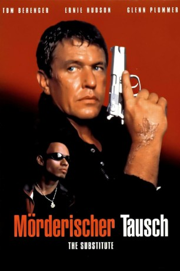
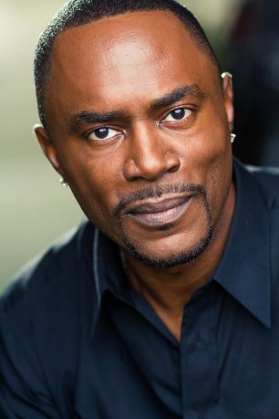

#12045 Mörderischer Tausch
Alternativ: The Substitute (Englischer Titel)
 
 IMDB-Wertung: 6.0 / 10
IMDB-Wertung: 6.0 / 10  Metascore: 0
Metascore: 0 
Der Ex-Marine John Shale besucht seine Jugendliebe Jane, die in Miami als Lehrerin arbeitet. Kurz nach seiner Ankunft wird Jane beim Joggen von einem Schläger überfallen und am Knie verletzt. Kurzerhand springt John für sie als Aushilfslehrer ein. Schon bald kommt er einer Gang auf die Schliche, die die gesamte Schule tyrannisiert. John setzt alles daran, die Störenfriede dingfest zu machen...
Jahr: 1996
Dauer: 115 Minuten
FSK: 18
Land: USA Studio: Orion PicturesTonspuren: DTS - ,
Untertitel:
Auflösung: 1080p (1920x1080) Größe: 8949 MB
Genre: Action, Thriller, Drama, Krimi
Regisseur: Robert Mandel
Drehbuch: Roy Frumkes, Rocco Simonelli, Alan Ormsby
Soundtrack: Gary Chang
Darsteller:
 Tom Berenger als Shale
Tom Berenger als Shale Raymond Cruz als Joey Six
Raymond Cruz als Joey Six William Forsythe als Hollan
William Forsythe als Hollan Luis Guzmán als Rem
Luis Guzmán als Rem-  Richard Brooks als Wellman
 Diane Venora als Jane Hetzko
Diane Venora als Jane Hetzko Glenn Plummer als Sherman
Glenn Plummer als Sherman- Shar-Ron Corley als Jerome
 Vincent Laresca als Rodriguez
Vincent Laresca als Rodriguez Maurice Compte als Tay
Maurice Compte als Tay- Marc Anthony als Lacas
 Ernie Hudson als Rolle
Ernie Hudson als Rolle- Beau Weaver als Janus Showreel Narrator
 Cliff De Young als Wolfson
Cliff De Young als Wolfson- Noelle Beck als Deidre Lane
- Jim Warne als Bull
- María Celedonio als Lisa
- David Spates als Michael
- Peggy Pope als Anna Dillon
- Rodney A. Grant als Johnny Glades
- Steve DuMouchel als Buyer
- Juan F. Cejas als Thug
 Mike Benitez als Chemistry Teacher
Mike Benitez als Chemistry Teacher- Bryan Friday als SWAT Team Member (uncredited)
 Robert Rusler als Thug (uncredited)
Robert Rusler als Thug (uncredited)- Frank Silva als Extra (uncredited)
- Ana Azcuy als TV Announcer
- Willis Sparks als John Janus
- Jody Wilson als Mrs. Andrewson
- Ian Marioles als KOD Punk
- David Hayes als Frank
- Nidia Alvarez als Female Student
- Melissa Martinez als Female Student
- Claudia Silva als Female Student
- Enrique Cruz als Male Student
- David Díaz als Male Student
- Lázaro Gómez als Male Student
- Travis Patterson als Male Student
- Simon Ricky als Male Student
- Mercedes Enriquez als High School Nurse
- Artie Malesci als Marvin
- Gustavo Laborie als Drug Carrier
- Dwight Lauderdale als Dwight Lauderdale
- Margo Peace als Mrs. Rolle
- Willmer Padilla als Burgler
- Marta Velasco als Rolle's Secretary
- Jay Bird als Gang Member (uncredited)
- Orlando Delbert als Man on Beach (uncredited)
- Anthony Petzold als Extra at Beach (uncredited)
- Claudio Sad als Student (uncredited)
Datei: X:\NEU\Mörderischer Tausch (1996, FSK18, 1920x1080).mkv seit 16.11.2019
 Es gibt insgesamt 187 Filme in der Gruppe 'NEU'
Es gibt insgesamt 187 Filme in der Gruppe 'NEU'